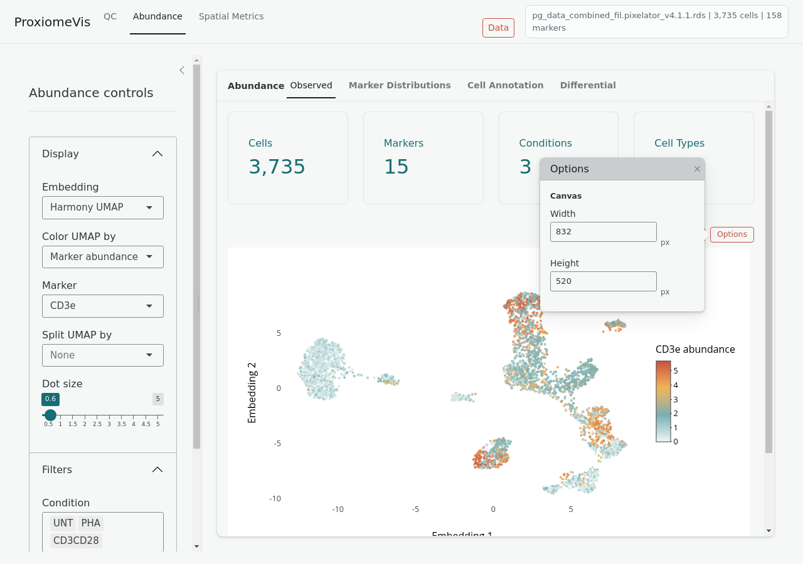
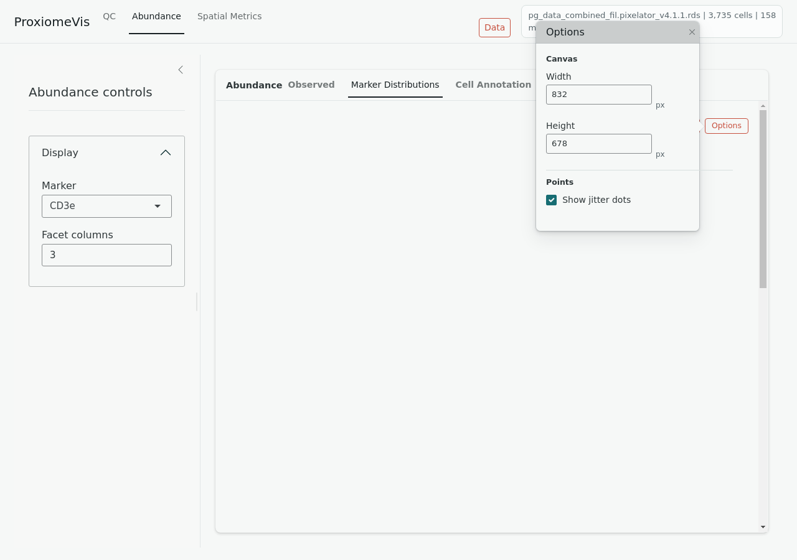

Abundance
Use the Abundance tab to inspect marker expression, marker distributions, cell-type composition, annotation summaries, and differential abundance.
Observed
The Observed view projects cells onto the selected embedding and colors them by marker abundance, cell type, condition, or other available metadata.
Open Options next to the plot to adjust canvas width, canvas height, and dot size.

Marker Distributions
The Marker Distributions view compares marker abundance across conditions, samples, or cell types. Use sidebar controls for marker selection, grouping, and facet columns.
Open Options next to the plot to adjust canvas width, canvas height, dot size, and jitter dot visibility.

Cell Annotation
The Cell Annotation view summarizes cell-type composition and annotation patterns. Use it to check whether expected cell populations are present across conditions and samples.
Differential
The Differential view compares two groups. Select group A, group B reference, cell-type filters, thresholds, and marker detail. The volcano and detail plots are shown side by side.
Differential results depend on the selected contrast and minimum cell count. If no points pass thresholds, lower the effect threshold or verify that both groups contain enough cells.